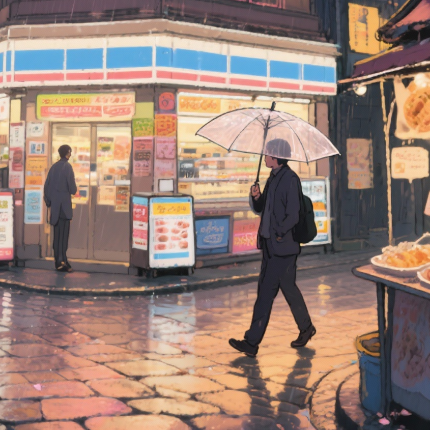

<!DOCTYPE html>
<html>

<head>
  <meta charset="utf-8">
  <title>GlslCanvas</title>
  <script type="text/javascript"
    src="dist/GlslCanvas.js"></script>
  <style>
    body {
      background: #101515;
      margin: 0;
      font-family: -apple-system, BlinkMacSystemFont, 'Segoe UI', Roboto, 'Helvetica Neue', Arial;
      color: #e6eef0;
    }

    .app {
      display: flex;
      height: 100vh;
      box-sizing: border-box;
      align-items: center;
      justify-content: center;
    }

    /* 左側選單 */
    #sidebar {
      /* 增加寬度以避免文字被截斷 */
      width: 360px;
      padding: 18px;
      box-sizing: border-box;
      position: fixed;
      left: 0;
      top: 0;
      bottom: 0;
      background: rgba(8, 12, 12, 0.9);
      border-right: 1px solid rgba(255,255,255,0.03);
      color: #ddd;
      overflow: auto;
    }

    #sidebar h3 {
      margin: 6px 0 12px 0;
      font-size: 16px;
    }

  #setList { padding: 0; margin: 0 0 10px 0; }
  /* 讓按鈕有足夠空間顯示文字，並於左側顯示正方形 icon */
  #setList li { display: flex; align-items: center; width: 100%; box-sizing: border-box; list-style: none; padding: 8px 10px; cursor: pointer; border-radius: 4px; margin-bottom: 6px; background: transparent; transition: background 0.15s ease; gap: 10px; }
  #setList li .set-icon { width: 44px; height: 44px; flex: 0 0 44px; object-fit: cover; border-radius: 6px; }
  /* label 區塊允許換行並能在 flex 中收縮，避免被截斷 */
  #setList li .set-label { flex: 1 1 auto; min-width: 0; word-break: break-word; }
    #setList li:hover { background: rgba(255,255,255,0.03); }
    #setList li.active { background: #6ee7b7; color: #042; font-weight: 600; }
    .hint { font-size: 12px; color: rgba(230,238,240,0.7); margin-top: 8px; }

  /* 控制面板（滑桿） */
  .controls { margin-top: 12px; }
  .control { display: flex; align-items: center; margin-bottom: 8px; }
  .control label { width: 80px; font-size: 13px; color: rgba(230,238,240,0.9); }
  .control input[type="range"] { flex: 1; }
  .control .val { width: 36px; text-align: right; font-size: 12px; margin-left: 8px; }

  /* 主區塊（放 canvas） */
  #main { margin-left: 380px; display: flex; align-items: center; justify-content: center; width: calc(100% - 380px); height: 100vh; }

    #glslCanvas {
      max-width: 90vw;
      max-height: 80vh;
      width: 900px;
      height: 600px;
      display: block;
      box-shadow: 0 6px 30px rgba(0,0,0,0.6);
      background: transparent;
    }
  </style>
</head>

<body>
  <div class="app">
    <aside id="sidebar">
      <h3>Déjà vu Image sets</h3>
      <ul id="setList">
        <li data-set="0" class="active"> <span>Set 1 — 台北 / 京都近郊</span>
          <input type="checkbox" class="orig-toggle" data-set="0" id="orig0" style="margin-left:8px;" />
          <label for="orig0" style="font-size:12px; margin-left:6px; color:rgba(230,238,240,0.8);">原圖</label>
        </li>
        <li data-set="1"> <span>Set 2 — 鄰暗時刻</span>
          <input type="checkbox" class="orig-toggle" data-set="1" id="orig1" style="margin-left:8px;" />
          <label for="orig1" style="font-size:12px; margin-left:6px; color:rgba(230,238,240,0.8);">原圖</label>
        </li>
        <li data-set="2"> <span>Set 3 — 街角一隅</span>
          <input type="checkbox" class="orig-toggle" data-set="2" id="orig2" style="margin-left:8px;" />
          <label for="orig2" style="font-size:12px; margin-left:6px; color:rgba(230,238,240,0.8);">原圖</label>
        </li>
        <li data-set="3"> <span>Set 4 — 參拜</span>
          <input type="checkbox" class="orig-toggle" data-set="3" id="orig3" style="margin-left:8px;" />
          <label for="orig3" style="font-size:12px; margin-left:6px; color:rgba(230,238,240,0.8);">原圖</label>
        </li>
      </ul>
      <p class="hint">點選切換貼圖組 (共 4 組)</p>
      <div class="controls">
        <h4 style="margin:8px 0 6px 0; font-size:14px;">Layer controls</h4>
        <div class="control">
          <label for="lowRange">Low</label>
          <input id="lowRange" type="range" min="0" max="1" step="0.01" value="0.5">
          <div class="val" id="lowVal">0.50</div>
        </div>
        <div class="control">
          <label for="midRange">Mid</label>
          <input id="midRange" type="range" min="0" max="1" step="0.01" value="0.25">
          <div class="val" id="midVal">0.25</div>
        </div>
        <div class="control">
          <label for="highRange">High</label>
          <input id="highRange" type="range" min="0" max="1" step="0.01" value="0.25">
          <div class="val" id="highVal">0.25</div>
        </div>
        <div class="control">
          <label for="midGainRange">MidGain</label>
          <input id="midGainRange" type="range" min="0" max="3" step="0.05" value="1.20">
          <div class="val" id="midGainVal">1.20</div>
        </div>
        <div class="control">
          <label></label>
          <button id="resetBtn" style="padding:6px 10px; border-radius:6px; background:#21353a; color:#e6eef0; border:1px solid rgba(255,255,255,0.04); cursor:pointer;">重置</button>
        </div>
      </div>
    </aside>
    <main id="main">
      <canvas id="glslCanvas" data-fragment-url="shaders/hybrid_image_v3.frag" width="900" height="600"
        data-textures="data/high1.png, data/low1.jpg, data/mid1.png"></canvas>
    </main>
  </div>
</body>
<script>
  // 初始化與切換邏輯都放在 DOMContentLoaded 以確保元素與資源已就緒
  window.addEventListener('DOMContentLoaded', function () {
    var canvas = document.getElementById('glslCanvas');
    if (!canvas) {
      console.error('glslCanvas not found');
      return;
    }

    // 建立 GlslCanvas sandbox，並放到 window 以便從 console 測試或手動 setUniform
    try {
      window.sandbox = new GlslCanvas(canvas);
    } catch (e) {
      console.error('Failed to initialize GlslCanvas:', e);
      return;
    }

    // 預先載入第一組的 mid 圖到 shader（會在 loadSet 被覆寫，如果每組有自己的 mid 圖，loadSet 會載入相對應的 u_tex2）
    if (window.sandbox && window.sandbox.setUniform) {
      window.sandbox.setUniform('u_tex2', 'data/mid1.png');
    }

    // --- 初始化控制滑桿與 uniforms ---
    var lowRange = document.getElementById('lowRange');
    var midRange = document.getElementById('midRange');
    var highRange = document.getElementById('highRange');
    var midGainRange = document.getElementById('midGainRange');
    var lowVal = document.getElementById('lowVal');
    var midVal = document.getElementById('midVal');
    var highVal = document.getElementById('highVal');
    var midGainVal = document.getElementById('midGainVal');

    function updateUIValue(el, display) {
      var v = parseFloat(el.value);
      display.textContent = v.toFixed(2);
      return v;
    }

    // pushUniforms(): 將目前滑桿值推送為 shader 的 uniforms
    // 注意：如果三個權重的總和為 0，shader 會改用 mouse.y 的自動權重
    function pushUniforms() {
      if (!window.sandbox || !window.sandbox.setUniform) return;
      var low = updateUIValue(lowRange, lowVal);
      var mid = updateUIValue(midRange, midVal);
      var high = updateUIValue(highRange, highVal);
      var mg = updateUIValue(midGainRange, midGainVal);
      // 傳送至 shader；若需要可把這些參數改為在 shader 端有更嚴格的範圍檢查
      window.sandbox.setUniform('u_lowWeight', low);
      window.sandbox.setUniform('u_midWeight', mid);
      window.sandbox.setUniform('u_highWeight', high);
      window.sandbox.setUniform('u_midGain', mg);
    }

    // Bind events
    [lowRange, midRange, highRange, midGainRange].forEach(function (el) {
      el.addEventListener('input', pushUniforms);
    });

    // Reset button
    var resetBtn = document.getElementById('resetBtn');
    if (resetBtn) {
      resetBtn.addEventListener('click', function () {
        lowRange.value = '0.50';
        midRange.value = '0.25';
        highRange.value = '0.25';
        midGainRange.value = '1.20';
        pushUniforms();
      });
    }

    // 初始 push
    pushUniforms();

    // textureSets: 每組包含三張貼圖 (high / low / mid)
    // loadSet() 會在切換時將對應三張貼圖分別載入到 shader 的 u_tex0,u_tex1,u_tex2
    // 你可以把 mid1..mid4.png 放到 data/ 下以啟用各組的 mid 圖
    var textureSets = [
      ['data/high1.png', 'data/low1.jpg', 'data/mid1.png', 'data/org1.png'],
      ['data/high2.png', 'data/low2.jpg', 'data/mid2.png', 'data/org2.png'],
      ['data/high3.png', 'data/low3.jpg', 'data/mid3.png', 'data/org3.png'],
      ['data/high4.png', 'data/low4.jpg', 'data/mid4.png', 'data/org4.png']
    ];

    var setList = document.getElementById('setList');
    var items = setList.querySelectorAll('li');

    var activeSetIndex = 0;
    // per-set original toggle states
    var originalFlags = [false, false, false, false];

    function setActive(index) {
      items.forEach(function (it) { it.classList.remove('active'); });
      var el = setList.querySelector('li[data-set="' + index + '"]');
      if (el) el.classList.add('active');
      activeSetIndex = index;
    }

    function loadSet(index) {
      index = Math.max(0, Math.min(textureSets.length - 1, index));
      var paths = textureSets[index];
      // GlslCanvas 使用 setUniform 來載入 sampler2D (會呼叫 loadTexture)
      // 現在每組包含四張貼圖：u_tex0 (high), u_tex1 (low), u_tex2 (mid), u_original (org)
      if (window.sandbox && window.sandbox.setUniform) {
        window.sandbox.setUniform('u_tex0', paths[0]);
        window.sandbox.setUniform('u_tex1', paths[1]);
        if (paths.length > 2) {
          window.sandbox.setUniform('u_tex2', paths[2]);
        }
        if (paths.length > 3) {
          window.sandbox.setUniform('u_original', paths[3]);
        }
        // apply stored original-flag for this set
        var show = originalFlags[index] ? 1.0 : 0.0;
        window.sandbox.setUniform('u_showOriginal', show);
        // update the checkbox UI for this set
        var cb = document.querySelector('.orig-toggle[data-set="' + index + '"]');
        if (cb) cb.checked = !!originalFlags[index];

        console.info('Loaded texture set', index, paths, 'u_original=', paths[3], 'showOriginal=', !!originalFlags[index]);
      } else {
        console.warn('sandbox not ready yet');
      }
      setActive(index);
    }

    // 綁定點擊事件
    items.forEach(function (li) {
      li.addEventListener('click', function () {
        var idx = parseInt(li.getAttribute('data-set'), 10);
        loadSet(idx);
      });
    });

    // 原圖勾選框：若切換某組到原圖，則切換該組的原圖 flag；若當前為該組則立即套用
    var origToggles = document.querySelectorAll('.orig-toggle');
    origToggles.forEach(function (cb) {
      // 防止點擊 checkbox 或其 label 時事件冒泡到 li，導致 li 的 click handler 重新載入並覆寫 checkbox 狀態
      cb.addEventListener('click', function (evt) {
        evt.stopPropagation();
      });
      // 如果有對應的 label（for=id），也阻止 label 的 click 冒泡
      var lab = document.querySelector('label[for="' + cb.id + '"]');
      if (lab) {
        lab.addEventListener('click', function (evt) { evt.stopPropagation(); });
      }
      cb.addEventListener('change', function (e) {
        var setIdx = parseInt(cb.getAttribute('data-set'), 10);
        originalFlags[setIdx] = cb.checked;
        // 確保 shader 的 u_original 指向該組的 org 檔案（避免尚未載入或被覆寫的情形）
        if (window.sandbox && window.sandbox.setUniform && textureSets[setIdx] && textureSets[setIdx].length > 3) {
          var orgPath = textureSets[setIdx][3];
          window.sandbox.setUniform('u_original', orgPath);
          console.info('Set u_original for set', setIdx, orgPath);
        }
        // 若當前 activeSet 剛好是這個 set，則立即更新 shader 的 u_showOriginal
        if (setIdx === activeSetIndex && window.sandbox && window.sandbox.setUniform) {
          window.sandbox.setUniform('u_showOriginal', cb.checked ? 1.0 : 0.0);
          console.info('Set u_showOriginal for set', setIdx, cb.checked);
        }
      });
    });

    // 預設載入第一組
    loadSet(0);

    // 保留原來的變數供其他程式邏輯使用（如果需要）
    var texCounter = 0;
    var sandbox_content = "";
    var sandbox_title = "";
    var sandbox_author = "";
    var sandbox_thumbnail = "";
  });
</script>

</html>